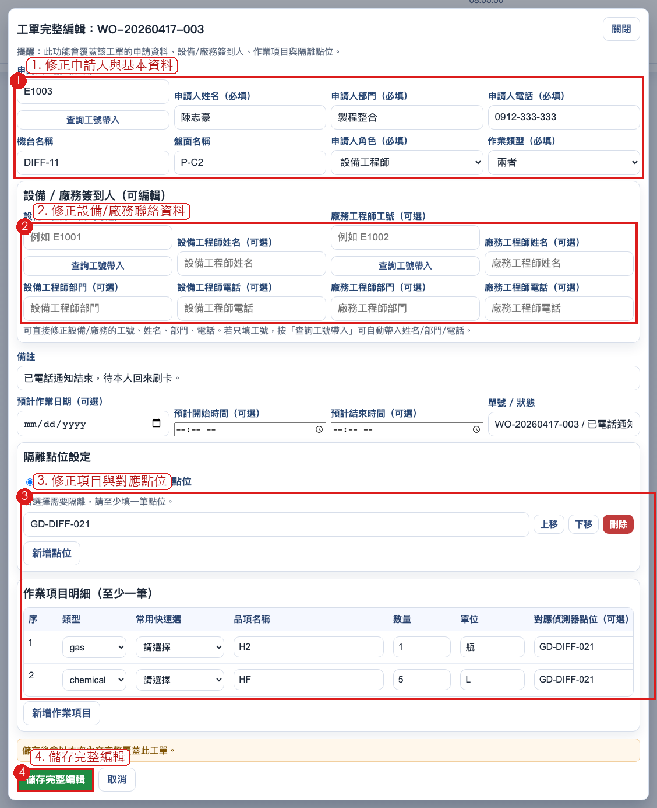
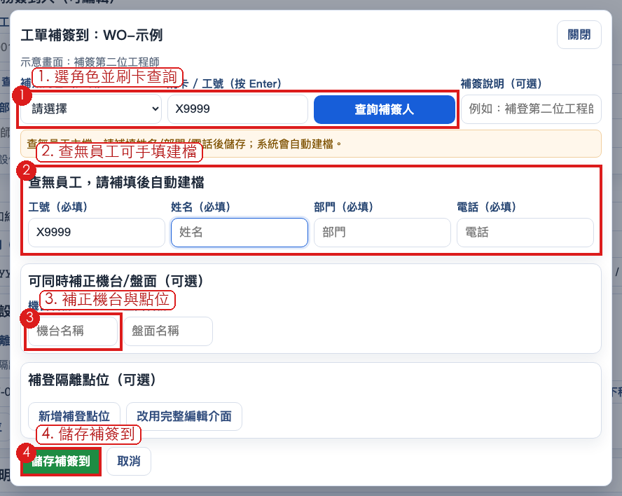

5. 工單完整編輯（含設備/廠務資料修正）
紅框編號對照：請依圖中 1 → 2 → 3 → 4 順序操作。

圖 5：完整編輯可覆蓋工單完整內容（含設備/廠務簽到人欄位）
5.1 可修正欄位
- 紅框 1：申請人基本資料與作業型態。
- 紅框 2：設備/廠務簽到人（工號、姓名、部門、電話）。
- 紅框 3：隔離設定、作業項目與對應偵測器點位。
- 紅框 4：按「儲存完整編輯」完成覆蓋更新。
- 申請人：工號、姓名、部門、電話、角色
- 設備工程師：工號、姓名、部門、電話
- 廠務工程師：工號、姓名、部門、電話
- 機台/盤面、預計時程、備註
- 作業項目（含每筆對應點位）與隔離點位清單
5.2 編輯注意事項
- 這是覆蓋式儲存，按下「儲存完整編輯」會以本次內容更新工單。
- 若設備/廠務改人或改聯絡資訊，簽到時間會依變更規則更新。
- 請確認部門/電話正確，避免後續通知找不到人。
6. 補簽到（第二位工程師）
紅框編號對照：補簽到也走完整編輯視窗，請依 1 → 2 → 3 → 4 操作。

圖 6：補簽到模式（完整編輯視窗開啟）可補第二位工程師資料
6.1 使用時機
- 同一台機台已有工單，但後續設備/廠務另一方補簽到。
- 避免同機台重複開第二張單造成追蹤混亂。
6.2 操作重點
- 紅框 1：先填第二位工程師申請資料（可刷卡/工號查詢帶入）。
- 紅框 2：補齊設備/廠務簽到資訊。
- 紅框 3：必要時同步補正時程、隔離點位與作業項目。
- 紅框 4：按儲存完成補簽到。
- 補簽到可選設備或廠務角色。
- 支援刷卡/工號查詢，查無員工時可手填並建檔。
- 可同步補正機台/盤面、補登點位，必要時可切到完整編輯調整項目。
9. 通知與簽退管理建議
建議值班追蹤方式
在歷史作業列表同時查看「設備工程師 / 廠務工程師」欄位與「時間紀錄」，以避免漏提醒簽退。
- 若作業到「待本人確認」，請主動通知人員回來刷卡。
- 若發現資料有誤，優先用「完整編輯」修正，避免重複開單。
- 若兩邊人員分開到場，優先用「補簽到」補第二位工程師。
- 若要查跨日資料，使用歷史作業列表日期篩選 + XLSX 匯出。
10. 常見問題（FAQ）
Q1：查無員工怎麼辦？
A：可直接手填姓名/部門/電話，送單或補簽到時會自動建檔；也可到管理區手動建立。
Q2：隔離點位一定要填嗎？
A：不是。只有在「需要隔離點位 = 是」時才強制至少一筆。每項目的對應點位可個別留空。
Q3：設備/廠務資料填錯可改嗎？
A：可以，進入「完整編輯」可修正設備/廠務的工號、姓名、部門、電話。
Q4：雙機協作為何不用完整備份 JSON 同步？
A：完整備份是還原用途；雙機協作應用共享資料夾事件檔（append-only）避免互覆蓋。
Q5：資料安全如何做？
A：至少每日一次匯出完整備份 JSON，並定期匯出完整查詢結果 XLSX 供稽核追溯。